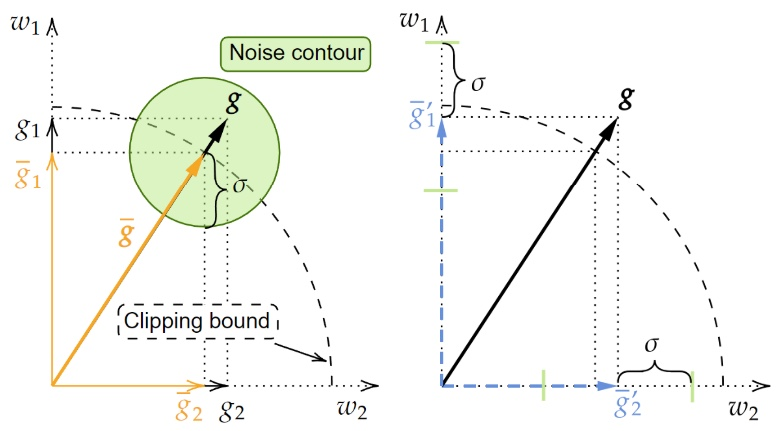

Improving Differentially Private SGD via Randomly Sparsified Gradients
TMLR 2023Transactions on Machine Learning Research

In brief
Analyzing the convergence of differentially private SGD reveals a surprising property: randomly zeroing out gradient coordinates before clipping and noising can tighten the convergence bound when noise dominates. The resulting random sparsification extension improves DP-SGD performance while also reducing communication cost and strengthening privacy against reconstruction attacks.
Key takeaways
- Randomly sparsifying gradients before clipping and noisification adjusts a trade-off inside DP-SGD's convergence bound, yielding a smaller bound when noise is dominant.
- The trade-off appears to be a unique property of DP-SGD: removing either noisification or gradient clipping eliminates it.
- A lightweight random sparsification (RS) extension improves performance across various DP-SGD frameworks.
- The sparse gradients additionally reduce communication cost and strengthen privacy against reconstruction attacks.
Abstract
Differentially private stochastic gradient descent (DP-SGD) has been widely adopted in deep learning to provide rigorously defined privacy, which requires gradient clipping to bound the maximum norm of individual gradients and additive isotropic Gaussian noise. With analysis of the convergence rate of DP-SGD in a non-convex setting, we identify that randomly sparsifying gradients before clipping and noisification adjusts a trade-off between internal components of the convergence bound and leads to a smaller upper bound when the noise is dominant. Additionally, our theoretical analysis and empirical evaluations show that the trade-off is not trivial but possibly a unique property of DP-SGD, as either canceling noisification or gradient clipping eliminates the trade-off in the bound. This observation is indicative, as it implies DP-SGD has special inherent room for (even simply random) gradient compression. To verify the observation and utilize it, we propose an efficient and lightweight extension using random sparsification (RS) to strengthen DP-SGD. Experiments with various DP-SGD frameworks show that RS can improve performance. Additionally, the produced sparse gradients of RS exhibit advantages in reducing communication cost and strengthening privacy against reconstruction attacks, which are also key problems in private machine learning.
BibTeX
@article{zhu_sparsification,
title = {Improving Differentially Private {SGD} via Randomly Sparsified Gradients},
author = {Zhu, Junyi and Blaschko, Matthew B.},
year = {2023},
journal = {Transactions on Machine Learning Research},
url = {https://arxiv.org/abs/2112.00845},
}